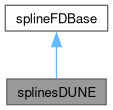

Specialisation of FD (binned) spline class. More...
#include <splines/splinesDUNE.h>
Inheritance diagram for splinesDUNE:

Collaboration diagram for splinesDUNE:

Public Member Functions | |
| splinesDUNE (covarianceXsec *xsec_cov) | |
| Constructor. | |
| virtual | ~splinesDUNE () |
| Destructor. | |
| virtual void | FillSampleArray (std::string SampleName, std::vector< std::string > OscChanFileNames) override |
| Fills indexing for each sample and generates a large spline vector. | |
| virtual std::vector< std::vector< int > > | StripDuplicatedModes (std::vector< std::vector< int > > InputVector) override |
| Find sand strips dubplicate modes to ensure everything corresponds to MaCh3 modes. | |
| virtual std::vector< std::vector< int > > | GetEventSplines (std::string SampleName, int iOscChan, int EventMode, double Var1Val, double Var2Val, double Var3Val) override |
| Getter method for each spline. | |
Detailed Description
Specialisation of FD (binned) spline class.
Definition at line 7 of file splinesDUNE.h.
Constructor & Destructor Documentation
◆ splinesDUNE()
| splinesDUNE::splinesDUNE | ( | covarianceXsec * | xsec_cov | ) |
Constructor.
- Parameters
-
xsec_cov cross-section matrix
Definition at line 7 of file splinesDUNE.cpp.
7 : splineFDBase(xsec_cov) {
8 MACH3LOG_INFO("Created splinesDUNE object");
9}
◆ ~splinesDUNE()
|
virtual |
Destructor.
Definition at line 11 of file splinesDUNE.cpp.
11 {
12 MACH3LOG_INFO("Deleting splineSKBase object");
13}
Member Function Documentation
◆ FillSampleArray()
|
overridevirtual |
Fills indexing for each sample and generates a large spline vector.
- Parameters
-
SampleName Name of sample OscChanFileNames names of oscillation channels in the sample
Definition at line 16 of file splinesDUNE.cpp.
21{
22
23 int iSample = getSampleIndex(SampleName);
24
25 int nOscChannels = nOscChans[iSample];
26
27 for (int iOscChan = 0; iOscChan < nOscChannels; iOscChan++)
28 {
29 std::cout << "Processing:" << OscChanFileNames[iOscChan] << std::endl;
30
31 TFile *File = new TFile(OscChanFileNames[iOscChan].c_str(), "READ");
32 if (!File || File->IsZombie())
33 {
34 std::cerr << "File " << OscChanFileNames[iOscChan] << " not found" << std::endl;
35 throw;
36 }
37
38 //This is the MC specific part of the code
39 //i.e. we always assume that the splines are just store in single TDirectory and they're all in there as single objects
40 TIter Next(File->GetListOfKeys());
41 TKey *Key;
42
43 std::set<std::string> unique_spline_names;
44 int nb_splines = 0;
45
46 while ((Key = (TKey *)Next()))
47 {
48 TClass *Class = gROOT->GetClass(Key->GetClassName());
49
50 //Skip the TGraphs also in the spline files
51 if (!Class->InheritsFrom("TSpline3")){continue;}
52 const char* keyName = Key->GetName();
53
54 char* SplineName = new char[strlen(keyName) + 1];
55 strcpy(SplineName, keyName);
56
57 nb_splines += 1;
58 if(unique_spline_names.count(std::string(SplineName)) > 0){
59 if (std::string(SplineName).find("unknown") == std::string::npos){
60 //std::cout << "Repeated entry for spline named: " << std::string(SplineName) << std::endl;
61 continue;
62 }
63 }
64 unique_spline_names.insert(std::string(SplineName));
65
66 char *Syst;
67 char *Mode;
68 int Var1Bin;
69 int Var2Bin;
70 int Var3Bin;
71
72 char *Token = strtok(SplineName, "_");
73 Token = strtok(NULL, "_");
74 Syst = Token;
75
76 int SystNum = -1;
77 for (unsigned iSyst = 0; iSyst < SplineFileParPrefixNames[iSample].size(); iSyst++) {
78 if (strcmp(Syst, SplineFileParPrefixNames[iSample][iSyst].c_str()) == 0) {
79 SystNum = iSyst;
80 break;
81 }
82 }
83
84 // If the syst doesn't match any of the spline names then skip it
85 if (SystNum == -1){
86 continue;
87 }
88
89 int ModeNum = -1;
90 Mode = strtok(NULL, "_");
91 for (unsigned int iMode = 0; iMode < SplineModeVecs[iSample][SystNum].size(); iMode++) {
92 if (strcmp(Mode, MaCh3mode_ToDUNEString((MaCh3_Mode)SplineModeVecs[iSample][SystNum][iMode]).c_str()) == 0) {
93 ModeNum = iMode;
94 break;
95 }
96 }
97
98 if (ModeNum == -1) {
99 //ETA - Turned this into an error
100 MACH3LOG_ERROR("Could not find mode {} for spline {}", Mode, Key->GetName());
101 MACH3LOG_ERROR("This is not ok, please check the spline file or the xsec systematic yaml file");
102 throw MaCh3Exception(__FILE__, __LINE__);
103 }
104
105 TSpline3 *Obj = (TSpline3 *)Key->ReadObj();
106 TSpline3_red *Spline = new TSpline3_red(Obj);
107 delete Obj;
108
109 Token = strtok(NULL, "_"); // DB Needed to remove sp from spline name
110
111 Var1Bin = atoi(strtok(NULL, "_"));
112 Var2Bin = atoi(strtok(NULL, "_"));
113
114 char *Var3Bin_Char = strtok(NULL, "_");
115 if (Var3Bin_Char == NULL)
116 {
117 Var3Bin = 0;
118 }
119 else
120 {
121 Var3Bin = atoi(Var3Bin_Char);
122 }
123
124 if (isValidSplineIndex(SampleName, iOscChan, SystNum, ModeNum, Var1Bin, Var2Bin, Var3Bin))
125 {
126 // loop over all the spline knots and check their value
127 // if the value is 1 then set the flat bool to false
128 int nKnots = Spline->GetNp();
129 bool isFlat = true;
130
131 for (int iKnot = 0; iKnot < nKnots; iKnot++)
132 {
133 double x = -999;
134 double y = -999;
135 Spline->GetKnot(iKnot, x, y);
136
137 if (x == -999 || y == -999)
138 {
139 std::cerr << "Something has gone wrong... knot position is at -999" << std::endl;
140 std::cerr << "This error brought you by the folks at : "<<__FILE__<<" : "<<__LINE__<<std::endl;
141 throw;
142 }
143
144 double Eval = Spline->Eval(x);
145 if (Eval < 0.99999 || Eval > 1.00001)
146 {
147 isFlat = false;
148 break;
149 }
150 }
151
152 //Rather than keeping a mega vector of splines then converting, this should just keep everything nice in memory!
153 indexvec[iSample][iOscChan][SystNum][ModeNum][Var1Bin][Var2Bin][Var3Bin]=MonolithIndex;
154
155 coeffindexvec.push_back(CoeffIndex);
156 // Should save memory rather saving [x_i_0 ,... x_i_maxknots] for every spline!
157 if (isFlat)
158 {
159 splinevec_Monolith.push_back(NULL);
160 delete Spline;
161 }
162 else{
163 splinevec_Monolith.push_back(Spline);
164 int np=Spline->GetNp();
165 uniquecoeffindices.push_back(MonolithIndex); //So we can get the unique coefficients and skip flat splines later on!
166 CoeffIndex+=np;
167 }
168
169 MonolithIndex+=1;
170 }
171 }//End of loop over all TKeys in file
172 //ETA - I have no idea why but this breaks in ROOT 6.24 :/
173 std::cout << "Got " << nb_splines << " total splines with " << unique_spline_names.size() << " unique names." << std::endl;
174 delete File;
175 } //End of oscillation channel loop
176
177 return;
178}
◆ GetEventSplines()
|
overridevirtual |
Getter method for each spline.
- Parameters
-
SampleName Name of sample iOscChan Oscillation channel of sample EventMode Mode of event Var1Val Bin 1 value Var2Val Bin 2 value Var3Val Bin 3 value
- Returns
- Value of spline for given bin
Definition at line 181 of file splinesDUNE.cpp.
183{
184 std::vector<std::vector<int>> ReturnVec;
185 int SampleIndex = -1;
186 for (unsigned int iSample = 0; iSample < SampleNames.size(); iSample++) {
187 if (SampleName == SampleNames[iSample]) {
188 SampleIndex = iSample;
189 }
190 }
191
192 if (SampleIndex == -1)
193 {
194 MACH3LOG_ERROR("Sample not found: {}", SampleName);
195 throw MaCh3Exception(__FILE__, __LINE__);
196 }
197
198 int nSplineSysts = (int)indexvec[SampleIndex][iOscChan].size();
199 //ETA- this is already a MaCh3 mode
200 //int Mode = MaCh3Mode_to_SplineMode(MaCh3_Mode(EventMode));
202
203 int Var1Bin = SplineBinning[SampleIndex][iOscChan][0]->FindBin(Var1Val)-1;
204 if (Var1Bin < 0 || Var1Bin >= SplineBinning[SampleIndex][iOscChan][0]->GetNbins()){
205 //Explicitly push back with an empty vector
206 ReturnVec.push_back(std::vector<int>());
207 return ReturnVec;
208 }
209
210 int Var2Bin = SplineBinning[SampleIndex][iOscChan][1]->FindBin(Var2Val)-1;
211 if (Var2Bin < 0 || Var2Bin >= SplineBinning[SampleIndex][iOscChan][1]->GetNbins()){
212 //Explicitly push back with an empty vector
213 ReturnVec.push_back(std::vector<int>());
214 return ReturnVec;
215 }
216
217 int Var3Bin = SplineBinning[SampleIndex][iOscChan][2]->FindBin(Var3Val)-1;
218
219 if (Var3Bin < 0 || Var3Bin >= SplineBinning[SampleIndex][iOscChan][2]->GetNbins()){
220 //Explicitly push back with an empty vector
221 ReturnVec.push_back(std::vector<int>());
222 return ReturnVec;
223 }
224
225 for(int iSyst=0; iSyst<nSplineSysts; iSyst++){
226 std::vector<int> spline_modes = SplineModeVecs[SampleIndex][iSyst];
227 int nSampleModes = (int)spline_modes.size();
228
229 //ETA - look here at the length of spline_modes and what you're actually comparing against
230 for(int iMode = 0; iMode<nSampleModes ; iMode++){
231 if(Mode == spline_modes[iMode]){
232 std::vector<int> event_vec(7);
233 event_vec[0]=SampleIndex;
234 event_vec[1]=iOscChan;
235 event_vec[2]=iSyst;
236 event_vec[3]=iMode;
237 event_vec[4]=Var1Bin;
238 event_vec[5]=Var2Bin;
239 event_vec[6]=Var3Bin;
240 int splineID=indexvec[SampleIndex][iOscChan][iSyst][iMode][Var1Bin][Var2Bin][Var3Bin];
241 if(!isflatarray[splineID]){
242 ReturnVec.push_back(event_vec);
243 }
244 }
245 }
246 }
247
248 return ReturnVec;
249}
◆ StripDuplicatedModes()
|
overridevirtual |
Find sand strips dubplicate modes to ensure everything corresponds to MaCh3 modes.
- Parameters
-
InputVector Input vector of smodes
- Returns
- Processed vector with merged modes
Definition at line 253 of file splinesDUNE.cpp.
253 {
254
255 //ETA - this is of size nPars from the xsec model
256 int InputVectorSize = InputVector.size();
257 std::vector< std::vector<int> > ReturnVec(InputVectorSize);
258
259 //ETA - loop over all systematics
260 for (int iVec=0;iVec<InputVectorSize;iVec++) {
261 std::vector<int> TmpVec;
262
263 //Loop over the modes that we've listed in xsec cov
264 for (unsigned int iMode = 0 ; iMode < InputVector[iVec].size() ; iMode++){
265 //Convert the MaCh3 mode to spline mode (could use MaCh3Mode_SplineMode_Map here)
267 bool IncludeMode = true;
268
269 //Now check to see if we've already included this unique spline mode
270 for(unsigned int entry_i = 0 ; entry_i < TmpVec.size() ; entry_i++){
271 //Check to see if we've already included this unique SK spline mode
272 if(iSplineMode == TmpVec[entry_i]){
273 IncludeMode = false;
274 }
275 }
276
277 if(IncludeMode){
278 //Push back with the spline mode a systematic applies to
279 TmpVec.push_back(iSplineMode);
280 }
281
282 }//end of loop over modes for a syst
283
284 ReturnVec[iVec] = TmpVec;
285 }//end of loop over systs
286
287 return ReturnVec;
288}
The documentation for this class was generated from the following files:
- splines/splinesDUNE.h
- splines/splinesDUNE.cpp